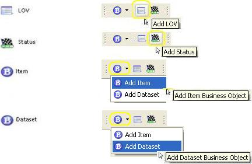

Add Definitions
Once you have a template project you can use the BMIDE to view the existing objects and behavior and add new ones. Read More...
Below are some common examples of definitions that can be created from the definitions toolbar.
|  | |
For a list of more definitions click here.
Next Steps: After adding new definitions you can deploy your template to a test environment for validation. Read More...